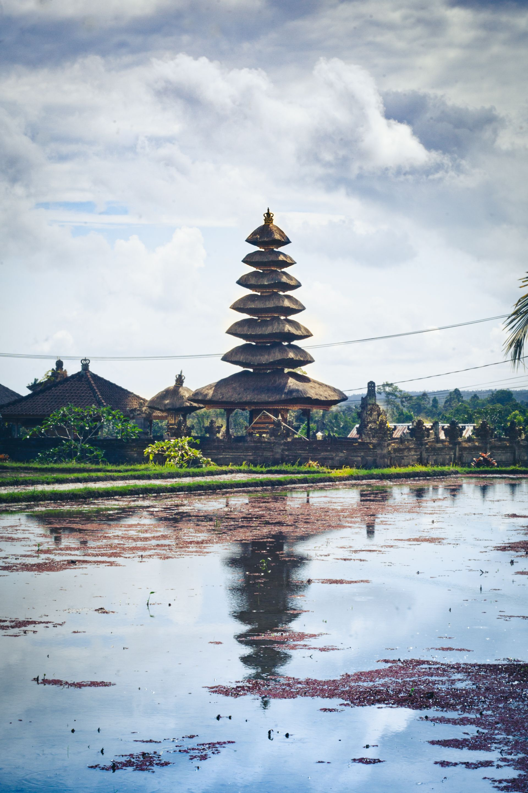

Destinasi Wisata Indonesia
Indonesia memiliki banyak destinasi wisata yang menarik, mulai dari pantai, pegunungan, hingga tempat bersejarah. Setiap daerah memiliki keindahan dan budaya yang berbeda.
Bali
Bali merupakan salah satu destinasi wisata terkenal di Indonesia. Bali memiliki pantai yang indah, budaya yang unik, serta berbagai tempat wisata yang menarik.
